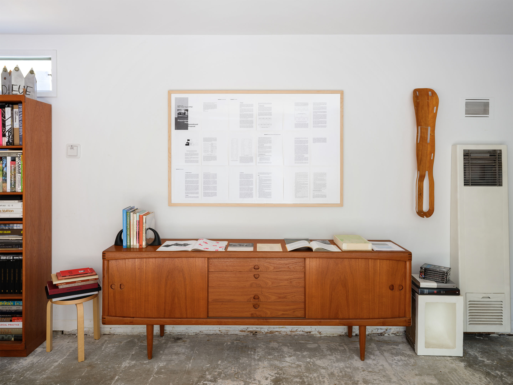
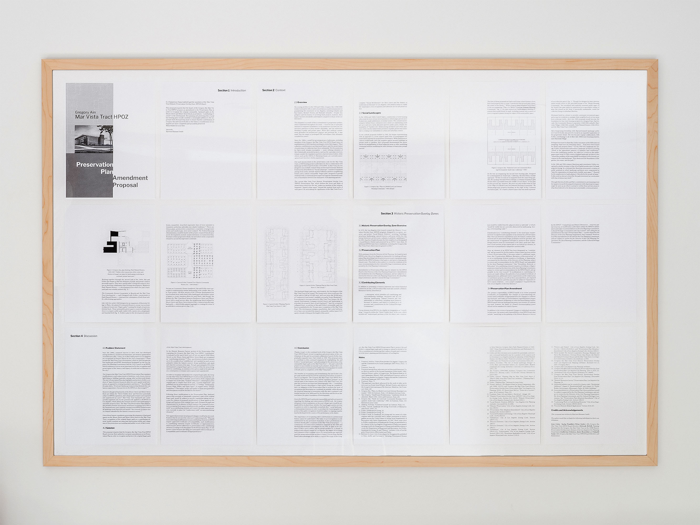
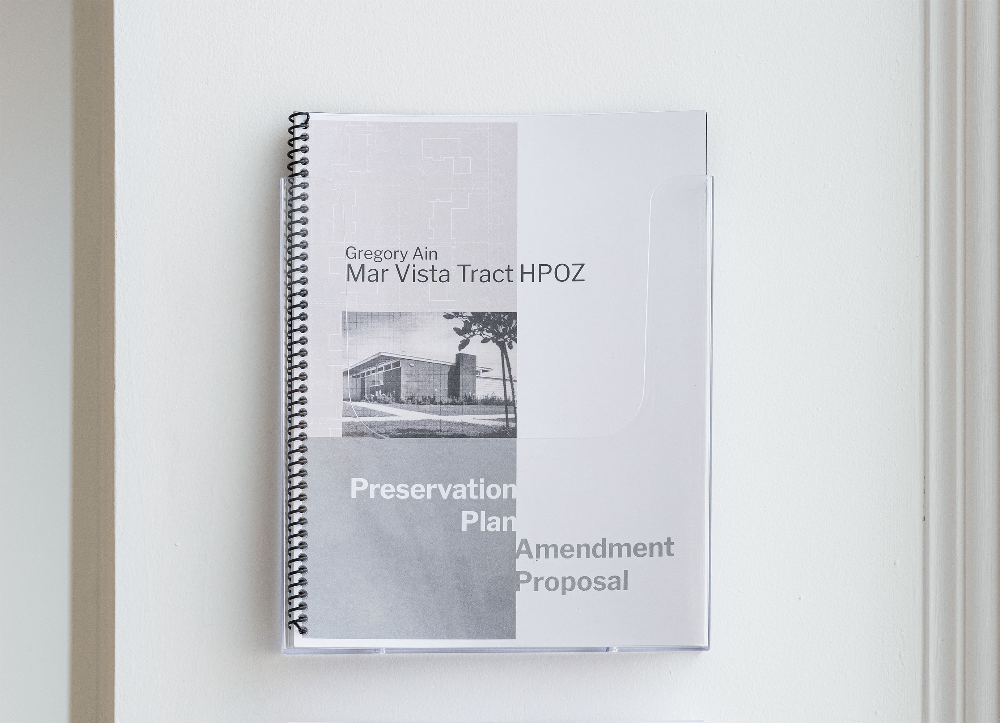
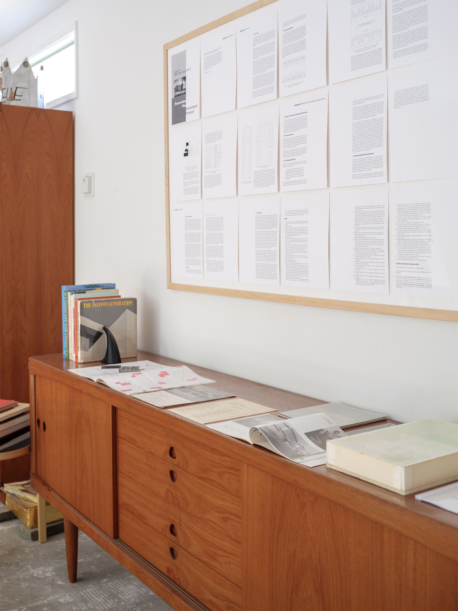
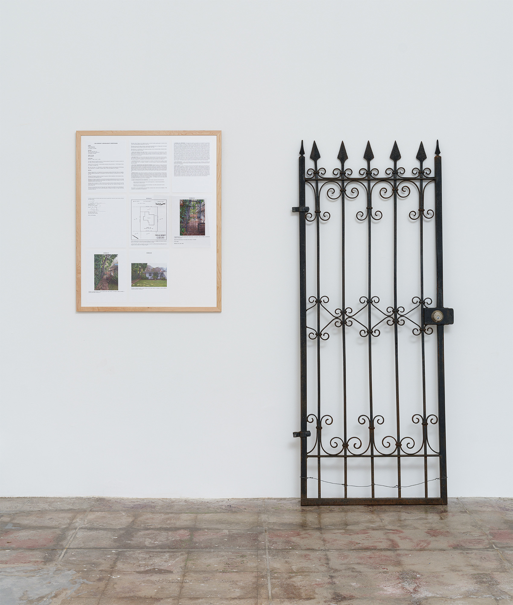
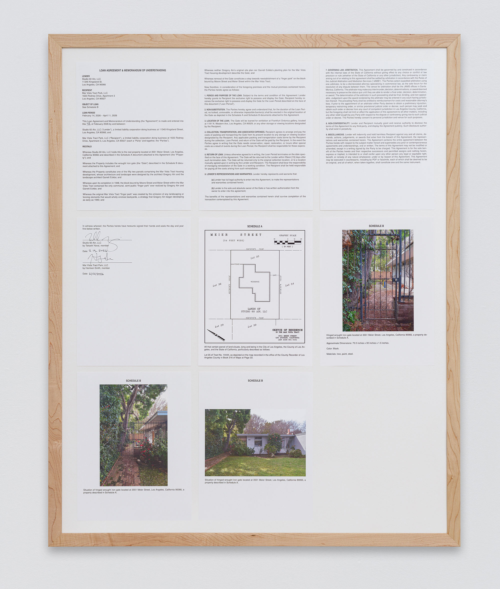
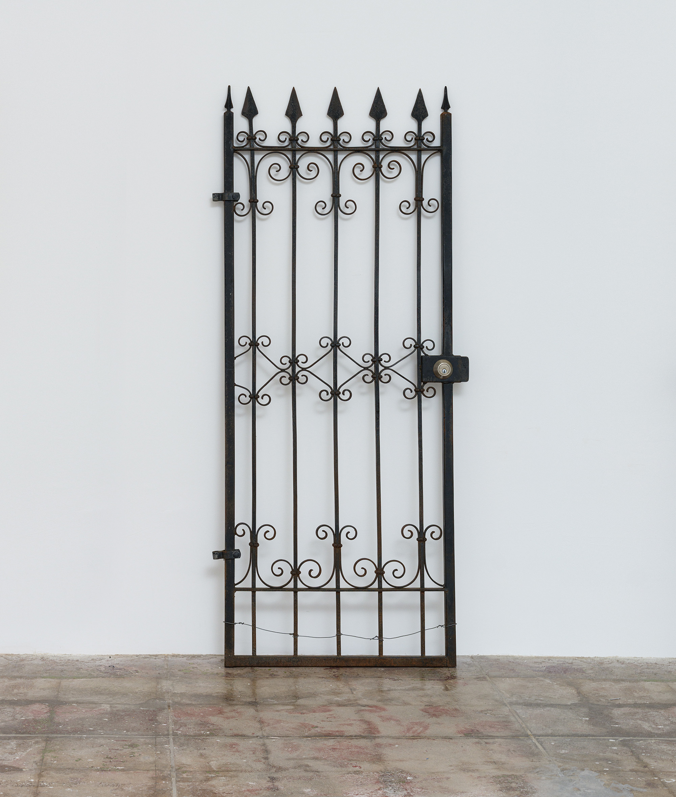
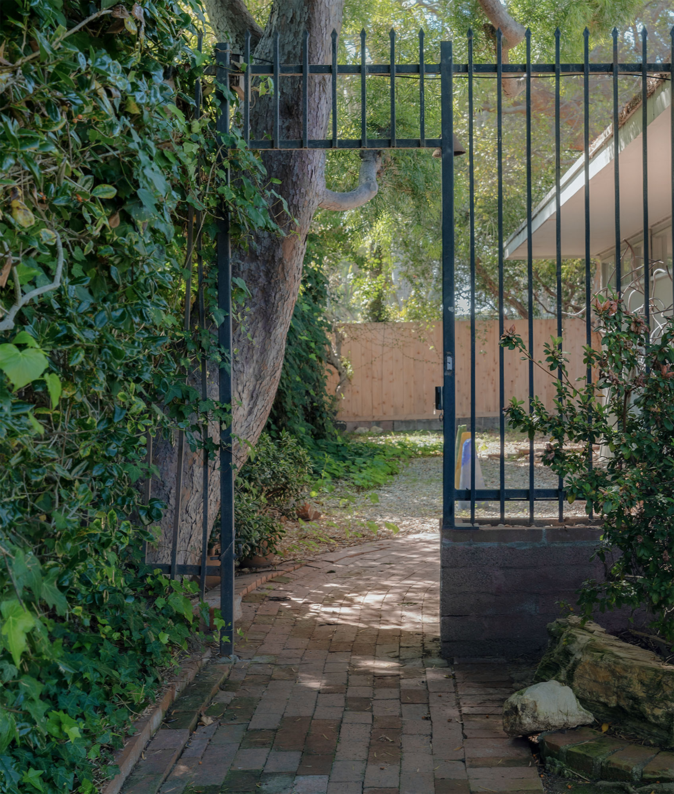
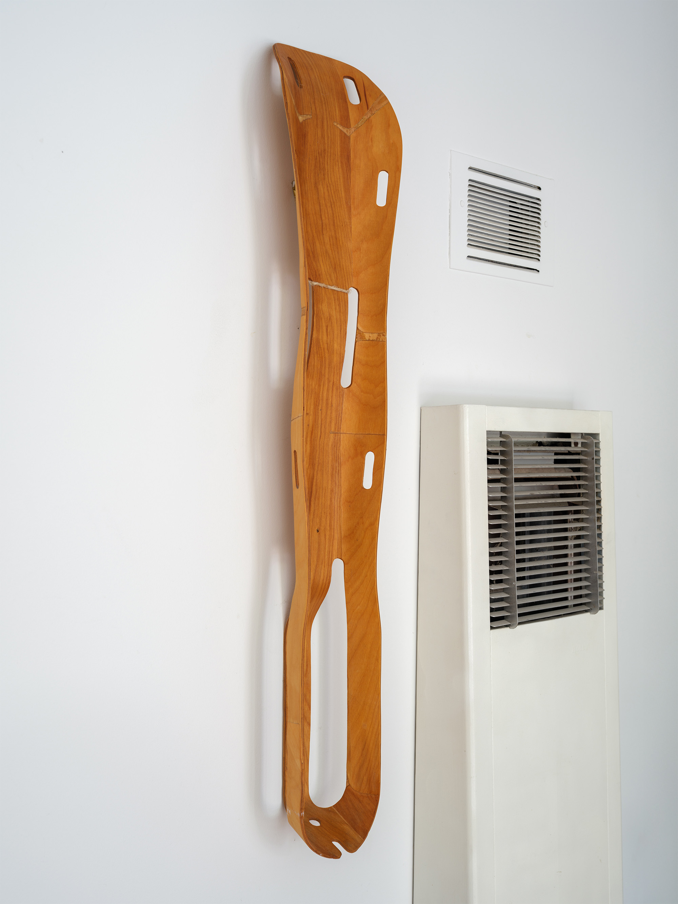

Social Landscape
Gregory Ain Mar Vista Tract Preservation Plan amendment proposal, 18 - 21 printed 8.5 x 11 pages, spiral bound in booklet and framed.
2026.
The building now occupied by Meier St/ was erected in 1948 as one of 52 homes comprising the Mar Vista Tract, a housing development designed by architect Gregory Ain and landscape architect Garrett Ekcbo.
Ain, a committed leftist, described architecture as a “social art” and approached it as a political project—resulting in his prolonged surveillance by the FBI, his informal blacklisting, and the premature truncation of his career. Among the most pointed architectural expressions of Ain’s progressivism was his blurring of property lines in plans for tract housing developments: by omitting fences, walls, and landscaping along private property lines, Ain and Eckbo sought to undo the strict parcelling of tracts and convert private backyards into communal “finger parks.” Despite Ain’s inclusion of such parks in housing development plans as early as 1940, it was not until 1948 that he realized this vision with the Mar Vista Tract.
In 2003, the Mar Vista Tract became the first post-WWII site to be recognized as a Historically Protected Overlay Zone (HPOZ). While the designation explicitly protects elements like windows, roofs, and building materials, the site’s finger park remains unrecognized and unprotected. By omitting the finger park from the zone’s Preservation Plan, the Mar Vista Tract HPOZ performs a selective historiography that extends the suppression of Ain’s progressive work first undertaken by the FBI.
Social Landscape is designed to restructure HPOZ regulations in order to record and protect Ain’s original finger park design for the Mar Vista Tract. A petition drafted and presented by the artist before the Gregory Ain HPOZ Board requests the board initiate an amendment to the HPOZ Preservation Plan to recognize and protect the finger park as a “contributing element.” If successfully passed by the HPOZ board and implemented by the Los Angeles Department of Planning,
Social Landscape would introduce additional regulations to the use and development of backyards of the Moore Street and Meier Street block of the Mar Vista Tract, and constitute a permanent intervention in the city government's historic record of Ain’s contributions to architectural practice and urban planning.

Gregory Ain Mar Vista Tract Ephemera and Research Materials
Texts and ephemera curated from the collection of Takashi Yanai. 2026.
1. Anthony Denzer,
Gregory Ain: The Modern Home as Social Commentary, Rizzoli (2008)
2. Garrett Eckbo,
Landscape for Living, University of Massachusetts Press (1950)
3. Esther McCoy,
Five California Architects, Reinhold (1960)
4. Garrett Eckbo,
The Art of Home Landscaping, McGraw-Hill (1978)
5. Marc Treib and Dorothée Imbert,
Garrett Eckbo: Modern Landscapes for Living, University of California Press (1997)
6. Anthony Fontenot,
Notes from Another Los Angeles: Gregory Ain and the Construction of Social Landscape, MIT (2022)
7. Thomas S. Hines,
Richard Neutra and the Search for Modern Architecture, University of California Press (1982)
8. Esther McCoy,
The Second Generation, Gibbs Smith (1984)
9. Gregory Ain and Joseph Johnson, “One Hundred Houses”
Arts and Architecture, May 1948
10. Gregory Ain with Joseph Johnson and Alfred Day, “Exhibition House by Gregory Ain” (catalog), The Museum of Modern Art — Women’s Home Companion (1950)
11. Gregory Ain with Joseph Johnson and Alfred Day, “Exhibition House by Gregory Ain — Price List for Furnishings” (catalog insert), The Museum of Modern Art — Women’s Home Companion (1950)
12. David Gebhard, Harriette Von Breton and Lauren Weiss, “The Architecture of Gregory Ain: The Play Between the Rational and High Art” (catalog) University of California, Santa Barbara Art Museum (1980)
13. David Gebhard, Harriette Von Breton and Lauren Weiss, “The Architecture of Gregory Ain: The Play Between the Rational and High Art” (catalog) University of California, Santa Barbara Art Museum (1980)
14. "Portrait of Gregory Ain," publicity photo released in connection with the exhibition "Exhibition House by Gregory Ain" by Homer Page, 1950; reproduced in Anthony Fontenot,
Notes from Another Los Angeles: Gregory Ain and the Construction of Social Landscape, MIT (2022)
15. Nihon University, “Model of 3550 Meier St,” no date.
16. Department of Architecture and Architectural Engineering College of Industrial Technology, Nihon University,
Report of Mar Vista Housing, no date.




Ingress
Limited liability corporation, loan agreement, memorandum of understanding, removed wrought iron gate. 2026.
On consignment to Frankfurt Ordorica from Mar Vista Tract Park, LLC
Ingress reestablishes public access to the rear, outdoor space of Meier St/. A gate separating the backyard of Meier St/ from the sidewalk was removed and reinstalled at Frankfurt Ordorica for the duration of the exhibition. A loan agreement executed by Studio Ain 60, LLC, owner of the Meier St/ property, and Mar Vista Park, LLC, a limited liability corporation created for the sole purpose of holding the “Ingress” work, formalizes this arrangement and is exhibited at Meier St/. A “non-substitution” clause prohibits Studio Ain 60, LLC from erecting any “locked, unmovable, or otherwise impassible barrier(s)” in the original location of the gate for the duration of the loan.

Molded Plywood Leg Splint
Charles and Ray Eames with Gregory Ain, Margaret Harris, and Griswald Raetze
Molded plywood. 1943.
In 1942, Gregory Ain was hired as Chief Engineer for the Eames Office. His primary task in this role was to develop a reliable method for molding plywood. The engineering team’s eventual success was the breakthrough that made the Eameses’ trademark plywood products possible. In 1943, early plywood furniture prototypes convinced the Evans Products Company to acquire the Eames team as the company’s new “Molded Plywood Division.” In the spring of 1946, the Museum of Modern Art presented an exhibition titled “New Furniture Designed by Charles Eames,” showcasing a variety of plywood works. The exhibition press release credited Charles Eames exclusively for the technology used to mass-produce molded plywood. Gregory Ain, alongside Molded Plywood Division coworkers Girswald Raetze, Harry Bertoia, and Herbert Matter, left the Eames team shortly thereafter.
A work already on display at 3551 Meier St. prior to this exhibition,
Molded Plywood Leg
Splint parallels the Mar Vista Tract development insofar as it represents a unique artefact of Ain’s work at the intersection of modernist design, government contracts, and the defense industry. One of a series of 150,000, this splint is immediately recognizable as an iconic representation of the Eames’ work. Ain’s intimate involvement in the design and development process remains, contrastingly, relatively unknown — a poignant example of his broader erasure from the canon of architectural modernism. Crediting Ain in the production of this splint contributes to the ongoing reconstruction of his legacy.
Dining Chair Metal
Charles and Ray Eames with Gregory Ain, Don Albinson, Milah Bernie, Harry Beroia, Frances Bishop, Norman Bruns, Georgia Cunningham, Victor Delgado, Milton Driggs, Ida Francesa, Saul Golden, Little Gus, Gus Holstrom, Cecil James, Herbert Matter, John Moon, Marion Overby, Griswald Raetze, Harry Soderbloom, and Ben Urmstron
Metal, molded plywood. 1946 (reproduction).
Attribution (with Carlos Agredano)
Exhibition checklist information for
Molded Plywood Lrg Splint (1943) and
Dining Chair Metal (1946, reproduction).
Photos: Evan Bedford and Taiyo Watanabe